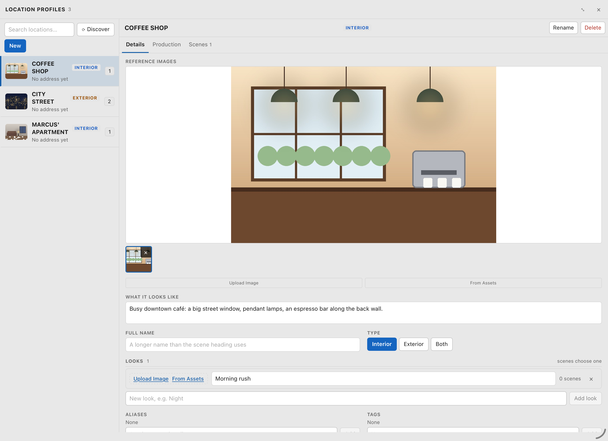

Location Profiles
Every place in your story, found from your scene headings: its looks, reference images and production details, and every scene set there.
How It Works
OpenDraft automatically parses your scene headings to extract locations. For example, from these scene headings:
INT. COFFEE SHOP - DAY
EXT. COFFEE SHOP - NIGHT
INT. SARAH'S APARTMENT - MORNING
INT. COFFEE SHOP - DAYOpenDraft extracts two locations: COFFEE SHOP (3 scenes) and SARAH'S APARTMENT (1 scene). It normalizes INT./EXT. prefixes and time-of-day suffixes so that the same physical place is grouped together.
Accessing Locations
Locations are available in two places:
- Scene Navigator > Locations tab — Switch to the Locations tab in the Navigator panel. It groups your scenes by location and needs no setup.
- View > Panels > Location Profiles — Opens Location Profiles, where each location keeps its own details, looks and reference images. To put a button for it on the toolbar, add Location Profiles in the toolbar’s customise list.

Location Groups
Each location group shows:
- The location name (e.g., "COFFEE SHOP")
- The number of scenes at that location
- An expandable list of all scenes at that location
Click any scene within a group to jump to it in the editor.
Batch Rename
Need to rename a location across your entire script? The batch rename feature updates every scene heading that uses that location:
- Open the location in Location Profiles.
- Click Rename at the top.
- Type the new location name. Leave Also rename it in every scene heading ticked.
- Click Save — every scene heading with that location is updated at once.
Example: If you rename "COFFEE SHOP" to "BISTRO", then "INT. COFFEE SHOP - DAY" becomes "INT. BISTRO - DAY", "EXT. COFFEE SHOP - NIGHT" becomes "EXT. BISTRO - NIGHT", and so on.
Location Profiles
Location Profiles is a record of every place in your story, kept with the project. Open it from View > Panels > Location Profiles. Clicking a location’s name in Scene Details or on a character’s Scenes tab opens it here.
Location profiles belong to a project, so the script has to be saved into one first. Every script in the project shares the same locations.
Discover and New
Click Discover to scan the saved scripts in the project and create an entry for every location named in a scene heading. Locations you already have are left alone, so it is safe to run again after writing new scenes. A place that appears both as INT. and as EXT. is recorded as Both.
Click New to add a location by hand — one you are scouting before any scene is written there.
The List and One Location
The list shows each location’s main image, type, address, tags and how many scenes are set there. Click one to open it. In a narrow panel the list and the location take turns — use ‹ to go back to the list; when the panel is wide enough they sit side by side, and ⛶ opens a wide view over the whole window. A location has three tabs: Details, Production and Scenes. Every field is saved as you leave it; there is no Edit button.
Details
- Reference Images — see below.
- What it looks like — what the audience sees: size, light, materials.
- Full Name — a longer description than the short name used in scene headings.
- Type — Interior, Exterior or Both.
- Looks — see Looks.
- Aliases — other names the script uses for the same place, so their scenes are counted together. Type one and click Add; × removes it.
- Tags — your own labels, such as "studio" or "permit needed".
Production
Address, Contact and Availability for the real place you plan to shoot at, and Notes for anything else worth remembering.
Looks
A location can look different from scene to scene — by day and by night, dressed for a party, after a fire. Name each look once, with an optional reference image, and scenes choose between them:
- Type a name under Looks and click Add look. Edit a name in place; × removes the look.
- Give a look an image with Upload Image or From Assets.
- A scene that has not chosen a look shows the one named like its heading’s time of day: name your looks Day and Night and every
- DAYand- NIGHTscene picks them up on its own.
Scenes
The Scenes tab lists every scene set at the location, by its name or any alias. For each scene you can choose the look and write the setting — what is different here in this scene — and see who is there and in which costumes. These are the same look and setting note as in Scene Details. Click a scene’s heading to go to it, with Scene Details opened beside it; click a name to open that character in Character Profiles.
Reference Images
Each location can hold one or more reference images — scouting photos, concept art, mood boards, floor plans.
- Upload Image — Add an image file from your device. It is stored in the project's assets and tagged with the location's name.
- From Assets — Pick an image that is already in the project.
The first image is the location's main image: it is shown large on the Details tab and as a small thumbnail beside the location's name in the list. Every image appears in the strip below it. Click an image to see it full size. On a thumbnail, ★ makes that image the main one and × removes it from the location. Removing an image here does not delete it from the project's assets.
Delete
Delete, at the top of a location, removes its record after asking. Scene headings are not changed.
Smart Parsing
The location parser intelligently handles:
- INT./EXT. prefixes —
INT.,EXT.,EST.,INT./EXT., andI/Eare all recognized and normalized. - Time of day — DAY, NIGHT, MORNING, EVENING, CONTINUOUS, LATER, SAME, MOMENTS LATER, and more.
- Sub-locations — "INT. HOUSE - KITCHEN - DAY" extracts "HOUSE - KITCHEN" as the location.
Use Cases
- Shooting schedule planning — Group all scenes at one location to minimize company moves during filming.
- Consistency checking — Spot locations that may be the same place spelled differently (e.g., "COFFEE SHOP" vs. "COFFEESHOP").
- Script analysis — See which locations dominate your screenplay.